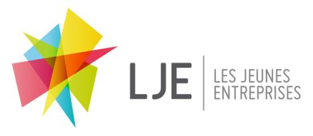
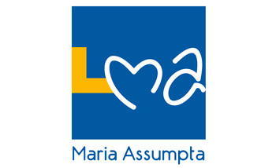

Shutsha Kasongo Emmanuel
Bienvenue ! This is my interactive CV !
Contact information
Happiness is a warm puppy.
- Charles M. Schulz

😇


About me
This is no time for ease and comfort. It is time to dare and endure.
- Winston Churchill

I am a graduate developer with a master’s degree in climate change sciences from the University of Bristol and a 2.1 undergraduate degree in geographical sciences from the Free University of Brussels. After living for 21 years in Belgium, I moved to England in 2017 to pursue my studies and career, I am currently based in Bristol. I have work experience in various fields such as weather forecasting, brand marketing and fundraising for communities. I have also volunteered for conserving the environment and I have taken part in projects at the university to promote sustainable activities. I am a competitive person keen on sport, more particularly athletics and karate. My career aim is to use my skills in climate sciences and programming to contribute to the development of technologies to tackle climate change.
😎
Skills
Through my education, I didn't just develop skills,
I didn't just develop the ability to learn, but I developed confidence.
- Michelle Obama
Software
- ArcGIS
- LIS-FLOOD-FP
- GENIE-2
- HadCM3
- Microsoft Word
- Microsoft Excel
💪🏾
Interactive
- Python
- R
- HTML
- CSS
- JavaScript
- JQuery
👊🏾

- French
- English
- Spanish
- Dutch
Language
💪🏾
Employment history
A dream doesn't become reality through magic; it takes sweat, determination and hard work.
- Colin Powell
2018:
Social Media Officer
University of Bristol Sustainability Jam
03/2018 - Current
Society organising sustainability projects and local environmental activism in Bristol.
Achievement: Raised awareness of sustainability issues among communities.

Student Brand Ambassador
Circle Pay
03/2018 - 08/2018
Promotion of the mobile application on university campuses and on social media.
Achievement: Achieved 30+ successful referrals to the mobile application.
2012 to 2017:

Activity Leader
Cambridge Education First
07/2017 - 08/2017
Leader of activities, field trips and social events for international students.
Achievement: Delivered entertaining activities and created positive group feelings for 200 different students.

Weather Forecaster
Prévisions Météo Belgique
07/2012 - 07/2017
Analysing meteorological events and processes and making weather forecasts for Belgium.
Achievement: Leader of a weather page consulted daily by 10,000 satisfied users.

Cook and Cleaner
Fast Food Chain: Quick Belgium
07/2012 - 06/2017
Preparation and cooking of food and maintenance of cleanliness in the restaurant.
Achievement: Efficiency and food quality praised by the company.
2015:

Fundraiser
Oxfam Belgium
07/2015 - 09/2015
Collecting funds door-to-door for helping refugees and disaster victims.
Achievement: Member of a high-performing team who gathered over £5000 for communities.
2012 to 2013:
Technical Director
LJE Mini-Entreprises: Be Flower
09/2012 - 03/2013
Supervision of the production of a decorated flower planter for a company led by students.
Achievement: Produced and sold over 60 handmade boxes.
Education
Education is the most powerful weapon which you can use to change the world.
- Nelson Mandela
2018 to 2019:
_nology
Tech Graduate Scheme
10/2018 - 01/2019
Conversion training course to improve technology skills (HTML, CSS, Java script, jQuery) and key business competencies (stakeholder management, presentation style).
2017 to 2018:
University of Bristol
M.Sc.: Climate Change Science and Policy
09/2017 - 09/2018
I studied climate change and its links to politics and policy-makers.
Cambridge Education First
Pre-Master Programme: English, Sciences
01/2017 - 06/2017
I did this pre-master programme to improve my language and research skills in English.
Grade: A
2013 to 2016:
Université Libre de Bruxelles
Bachelor of Science: Physical and Human Geography
09/2013 - 06/2016
I studied geography and sciences (Chemistry, Biology, Physics).
Grade: 2:1 (Distinction)
2007 to 2013:
Lycée Maria Assumpta
GCSE: General Education
09/2007 - 06/2013
Main subjects: Sciences, Mathematics, French, English, Dutch, Spanish.
Grade: 68.7%
Awards and Certificates
In the end it's about the work, not an award you get for the work.
- Linda Fiorentino
-
Award of young entrepreneur from LJE Mini-Entreprises
March 2013
Award received for developing an innovative product for sale.
-
Frontier: Climate change volunteer certificate
June 2018
Successfully completed a volunteering programme to help in the tropical forest and wildlife conservation in Costa Rica.
Hobbies and volunteering experiences
My hobbies just sort of gradually became my vocation.
- Al Yankovic

Athletics

Karate

Hiking
Hiker
I am an explorer, I love travelling around the world, hiking and discovering the environment.
The Earth is precious.

Environment
Environmentalist
Helping in the preservation of the ecosystems is important for me.
I have volunteered for various organisations such as Oxfam and Frontier in Costa Rica.

Climatology
Climatologist
I am keen on climate sciences, I have been studying and doing weather forecasts since I am 13 years old.
Contact me
I have created this section so that you can contact me. Please feel free to send me a message.